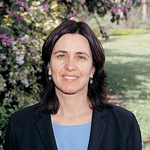

Shafi Goldwasser | |
|---|---|
שפרירה גולדווסר | |
 Goldwasser in 2010 | |
| Born | Shafrira Goldwasser November 14, 1959 New York City, United States |
| Citizenship |
|
| Education | Carnegie Mellon University (BS) University of California, Berkeley (MS, PhD) |
| Known for | |
| Children | 2 |
| Awards |
|
| Scientific career | |
| Fields | Computer science, cryptography |
| Institutions | |
| Thesis | Probabilistic Encryption: Theory and Applications (1984) |
| Manuel Blum[3] | |
Doctoral students | |
| Website | people |
{kind=link}
Shafrira Goldwasser (Hebrew: שפרירה גולדווסר; born November 14, 1959[5][6]) is an Israeli-American computer scientist. She is the RSA Professor of Electrical Engineering and Computer Science at the Massachusetts Institute of Technology,[7] a professor of mathematical sciences at the Weizmann Institute of Science, the former director of the Simons Institute for the Theory of Computing, and co-founder and chief scientist of Duality Technologies.[8][9][10][11][12] In 2012, she and Silvio Micali won the ACM Turing Award.
Education and early life
Goldwasser was born in New York City and grew up in Tel Aviv.[6] She later returned to the US and obtained her bachelor's degree in 1979 in mathematics and science from Carnegie Mellon. She received a master's degree in 1981 and PhD in 1984 from Berkeley advised by Manuel Blum.[3]
While at Berkeley, Goldwasser worked on cryptography and algorithmic number theory.[13] She and Blum proposed the Blum-Goldwasser cryptosystem.[3] Along with Silvio Micali, also a student at Berkeley at the time, she introduced the notion of probabilistic encryption where one message can be encrypted probabilistically to many different ciphertexts, which is more resistant to chosen-plaintext attacks.[13]
Career and research
Goldwasser joined MIT in 1983, and in 1997 became the first holder of the RSA Professorship. She became a professor at the Weizmann Institute of Science, concurrent to her professorship at MIT, in 1993. She is a member of the theory of computation group at MIT Computer Science and Artificial Intelligence Laboratory.[14]
In November 2016, along with several colleagues including Vinod Vaikuntanathan, Goldwasser co-founded Duality Technologies in order to commercialize fully homomorphic encryption.[15] She is also a scientific advisor for several technology startups, including QED-it, specializing in the Zero Knowledge Blockchain, and Algorand, a pure proof-of-stake blockchain founded by her collaborator Silvio Micali.[16]
On January 1, 2018, she became the director of Simons Institute for the Theory of Computing, a position she held until August 2024.[17][18]
Research
Goldwasser's research areas include computational complexity theory, cryptography and computational number theory. In 1984, along with Silvio Micali, she introduced probabilistic encryption, which has become the basis for most public-key cryptographic schemes.[19][13]
In 1985, Goldwasser, Silvio Micali, and Charles Rackoff introduced zero-knowledge proofs, which became a fundamental cryptographic primitive used to probabilistically and interactively demonstrate the validity of an assertion without conveying any additional knowledge.[20] They began by studying interactive proofs more broadly, where a proof is developed interactively by answering a series of questions about a problem.[13] In the late 1980s, Micali's group and the duo of László Babai and Shlomo Moran separately published papers introducing the concept of interactive proofs: they all later shared a Gödel prize for their contributions.[21]
In complexity theory, she has worked on hardness of approximation and its connections to interactive proofs and the PCP theorem.[20] She has also developed protocols for delegating computations to untrusted servers.[22] With Joe Kilian, she developed a primality test using elliptic curves.[23] Goldwasser is also a lead on Project CETI, an interdisciplinary initiative for translating the communication of sperm whales.[24]
Awards and honors
Goldwasser was awarded the 2012 Turing Award along with Silvio Micali for having "pioneered the field of provable security, which laid the mathematical foundations that made modern cryptography possible."[25][26]
Goldwasser has twice won the Gödel Prize in theoretical computer science: first in 1993 along with László Babai, Silvio Micali, Shlomo Moran, and Charles Rackoff (for "The knowledge complexity of interactive proof systems"),[27] and again in 2001 along with Sanjeev Arora, Uriel Feige, Carsten Lund, László Lovász, Rajeev Motwani, Shmuel Safra, Madhu Sudan, and Mario Szegedy (for Interactive Proofs and the Hardness of Approximating Cliques).[28] She also received the ACM Grace Murray Hopper Award in 1996 and the RSA Award for Excellence in Mathematics in 1998.[29]
In 2001 she was elected to the American Academy of Arts and Sciences and in 2002 she gave a plenary lecture at the International Congress of Mathematicians in Beijing.[30] In 2004 she was elected to the National Academy of Sciences,[31] and in 2005 to the National Academy of Engineering for contributions to cryptography, number theory, and complexity theory, and their applications to privacy and security.[32] In 2006, Berkeley awarded her its Computer Science Distinguished Alumni Award.[33] She was selected as an IACR Fellow in 2007. Goldwasser received the 2008–2009 Athena Lecturer Award of the Association for Computing Machinery's Committee on Women in Computing.[31] She is the recipient of The Franklin Institute's 2010 Benjamin Franklin Medal in Computer and Cognitive Science.[34] She received the IEEE Emanuel R. Piore Award in 2011.[35]
Goldwasser was elected as an ACM Fellow in 2017.[36] In July 2017, she was a plenary lecturer in the Mathematical Congress of the Americas.[37] She received the 2018 Frontier of Knowledge award together with Micali, Rivest and Shamir.[38]
In 2018, Goldwasser was awarded an honorary degree by her alma mater, Carnegie Mellon University.[39] In June 2019 Goldwasser was awarded an honorary doctorate of science by the University of Oxford.[40] She was elected as a fellow of the UK's Royal Society in 2023.[41]
Goldwasser is featured in the Notable Women in Computing cards.[42] She won the Suffrage Science award in 2016.[2] She was on the Mathematical Sciences jury for the Infosys Prize in 2020.[43] She was awarded the 2021 L’Oréal-UNESCO for Women in Science Award in Computer Science.[44]
Personal life
Goldwasser has two sons.[45][6]
References
- ^ Savage, N. (2013). "Proofs probable: Shafi Goldwasser and Silvio Micali laid the foundations for modern cryptography, with contributions including interactive and zero-knowledge proofs". Communications of the ACM. 56 (6): 22. doi:10.1145/2461256.2461265. S2CID 26769891.
- ^ a b "Suffrage Science Maths and Computing 2016". issuu.com. October 7, 2016. Archived from the original on February 26, 2023. Retrieved November 27, 2020.
- ^ a b c d Shafi Goldwasser at the Mathematics Genealogy Project
- ^ Goldwasser, S.; Micali, S.; Rivest, R. L. (1988). "A Digital Signature Scheme Secure Against Adaptive Chosen-Message Attacks". SIAM Journal on Computing. 17 (2): 281. CiteSeerX 10.1.1.309.8700. doi:10.1137/0217017. S2CID 1715998.
{{cite journal}}: Cite uses deprecated parameter|citeseerx=(help) - ^ "Shafrira Goldwasser". Heidelberg Laureate Forum. Retrieved July 20, 2026.
- ^ a b c Charles Rackoff (March 13, 2012). ""Shafi Goldwasser - A.M. Turing Award Laureates"". ACM.
- ^ "Shafi Goldwasser | MIT CSAIL". www.csail.mit.edu. Retrieved November 2, 2018.
- ^ "About – Duality Technologies". Duality Technologies. Retrieved April 10, 2018.
- ^ Hirsch, Deborah (December 16, 2012). "Jewish 6-year-old Youngest of Newtown Shooting Victims". Archived from the original on September 27, 2010.
- ^ Shafi Goldwasser author profile page at the ACM Digital Library
- ^ Shafi Goldwasser's publications indexed by the Scopus bibliographic database. (subscription required)
- ^ Goldwasser, S.; Micali, S. (1984). "Probabilistic encryption". Journal of Computer and System Sciences. 28 (2): 270. doi:10.1016/0022-0000(84)90070-9.
- ^ a b c d Garfinkel, Simon (August 21, 2019). "Shafi Goldwasser: The number theory expert who helped revolutionize cryptography". MIT Technology Review. Retrieved August 23, 2025.
- ^ Shafi Goldwasser Biography – via www.BookRags.com.
- ^ "About – Duality Technologies". Duality Technologies. Retrieved April 10, 2018.
- ^ "Team". www.algorand.com. Archived from the original on March 16, 2021. Retrieved November 27, 2020.
- ^ "Shafi Goldwasser appointed director of the Simons Institute for the Theory of Computing". News.berkeley.edu. October 10, 2017. Retrieved April 10, 2018.
- ^ "Letter from the Director, August 2024". Simons Institute. August 29, 2024. Retrieved August 23, 2025.
- ^ "Probabilistic Encryption" (PDF). Groups.csail.mit.edu. Archived from the original (PDF) on March 28, 2016. Retrieved April 10, 2018.
- ^ a b "Interactive Proofs and the Hardness of Approximating Cliques" (PDF). Groups.csail.mit.edu. Archived from the original (PDF) on June 10, 2011. Retrieved April 10, 2018.
- ^ Parberry, Ian. "1993 Gödel Prize". ACM Special Interest Group on Algorithms and Computation Theory. Archived from the original on December 8, 2015. Retrieved August 23, 2025.
- ^ Goldwasser, Shafi; Kalai, Yael Tauman; Rothblum, Guy (January 1, 2008). "Delegating computation: interactive proofs for muggles". Microsoft Research: 113–122. Retrieved April 10, 2018.
- ^ Goldwasser, Shafi; Kilian, Joe (July 1999). "Primality testing using elliptic curves". Journal of the ACM. 46 (4): 450–472. doi:10.1145/320211.320213. S2CID 12453179.
- ^ Welch, Craig (April 19, 2021). "Groundbreaking effort launched to decode whale language". National Geographic Society. National Geographic Society. Archived from the original on April 19, 2021. Retrieved October 28, 2021.
- ^ "Goldwasser, Micali Receive ACM Turing Award for Advances in Cryptography". ACM. Archived from the original on March 16, 2013. Retrieved March 13, 2013.
- ^ AbAbazorius, CSAIL (March 13, 2013). "Goldwasser and Micali win Turing Award". MIT News.
- ^ Goldwasser, S.; Micali, S.; Rackoff, C. (1985). "The knowledge complexity of interactive proof-systems". Proceedings of the seventeenth annual ACM symposium on Theory of computing – STOC '85. Association for Computing Machinery (ACM). p. 291. CiteSeerX 10.1.1.397.4002. doi:10.1145/22145.22178. ISBN 978-0897911511. S2CID 8689051.
{{cite book}}: Cite uses deprecated parameter|citeseerx=(help) - ^ Feige, U.; Goldwasser, S.; Lovász, L.; Safra, S.; Szegedy, M. (1996). "Interactive proofs and the hardness of approximating cliques". Journal of the ACM. 43 (2): 268–292. doi:10.1145/226643.226652.
- ^ "Shafi Goldwasser". Simons Institute. Retrieved August 23, 2025.
- ^ "Plenary Speakers". www.mathunion.org.
- ^ a b "Home". weizmann.ac.il.
- ^ "Dr. Shafrira Goldwasser". NAE Website. Retrieved September 18, 2021.
- ^ "CS Distinguished Alumni Award Winners". UC Berkeley Electrical Engineering & Computer Sciences. Retrieved August 23, 2025.
- ^ News Office (October 21, 2009). "Goldwasser, Stubbe named Franklin Institute laureates". MIT News.
- ^ "IEEE Emanuel R. Piore Award Recipients" (PDF). IEEE. Archived from the original (PDF) on February 17, 2013. Retrieved December 30, 2010.
- ^ ACM Recognizes 2017 Fellows for Making Transformative Contributions and Advancing Technology in the Digital Age, Association for Computing Machinery, December 11, 2017, retrieved November 13, 2017
- ^ "Home | Mathematical Congress of the Americas 2017". mca2017.org.
- ^ "homepage – Premios Fronteras". Premios Fronteras. Retrieved April 10, 2018.
- ^ University, Carnegie Mellon. "Commencement Speakers and Honorary Degree Recipients – Leadership – Carnegie Mellon University". www.cmu.edu. Retrieved September 21, 2018.
- ^ "Honorary degree recipients for 2019 announced". The University of Oxford. March 25, 2019. Retrieved June 26, 2019.
- ^ "Exceptional scientists elected as Fellows of the Royal Society | Royal Society". The Royal Society. Retrieved August 23, 2025.
- ^ "Notable Women in Computing".
- ^ "Infosys Prize – Jury 2020". www.infosys-science-foundation.com. Retrieved December 10, 2020.
- ^ "Dickenstein and Goldwasser Receive International Awards for Women in Science" (PDF). Notices of the American Mathematical Society.
- ^ Goldreich, Oded, ed. (2019). Providing Sound Foundations for Cryptography: On the Work of Shafi Goldwasser and Silvio Micali. Association for Computing Machinery. pp. 20–21. doi:10.1145/3335741. ISBN 978-1-4503-7266-4.